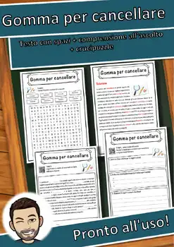
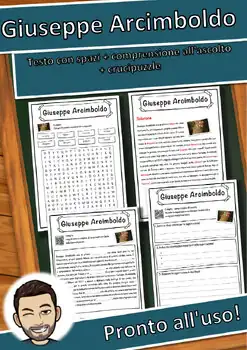
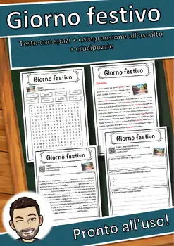
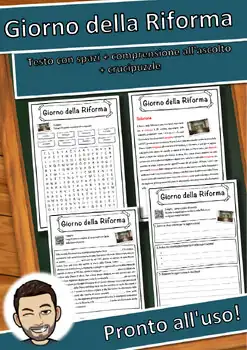
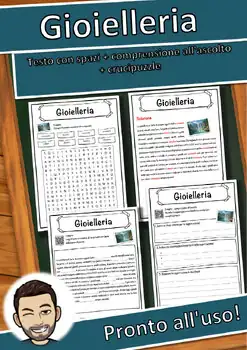

New resources
My newest resources appear here first. The list updates automatically.
48 resources

Lituania – Italian Reading Comprehension Worksheet (Scheda): Cloze & Listening

Milton Keynes – Worksheet: cloze text, listening comprehension and word search

Litro – Italian Reading Comprehension Worksheet (Scheda): Cloze & Listening

Litio – Italian Reading Comprehension Worksheet (Scheda): Cloze & Listening

Lisbona – Italian Reading Comprehension Worksheet (Scheda): Cloze & Listening

Lione – Italian Reading Comprehension Worksheet (Scheda): Cloze & Listening
Lingua turca – Italian Reading Comprehension Worksheet (Scheda didattica)
Lingua romena – Italian Reading Comprehension Worksheet (Scheda didattica)

Lingua – Italian Reading Comprehension Worksheet (Scheda): Cloze & Listening

Lago – Italian Reading Comprehension Worksheet (Scheda): Cloze & Listening

Listening Walk FREE Sampler | Sound Riddles & Listening Bingo | Grades 1-4

Irlanda – Italian Reading Comprehension Worksheet (Scheda): Cloze & Listening

Impresa – Italian Reading Comprehension Worksheet (Scheda): Cloze & Listening

Grafite – Italian Reading Comprehension Worksheet (Scheda): Cloze & Listening

Gomma per cancellare – Italian Reading Comprehension Worksheet
Giuseppe Verdi – Italian Reading Comprehension Worksheet (Scheda didattica)

Cuneo – Scheda: testo con spazi vuoti, comprensione all'ascolto e crucipuzzle

Giuseppe Arcimboldo – Italian Reading Comprehension Worksheet (Scheda didattica)

Giuramento – Italian Reading Comprehension Worksheet (Scheda): Cloze & Listening

Giudice – Italian Reading Comprehension Worksheet (Scheda): Cloze & Listening
Giovanni Battista – Italian Reading Comprehension Worksheet (Scheda didattica)

Giornale – Italian Reading Comprehension Worksheet (Scheda): Cloze & Listening

Crauti – Italian Reading Comprehension Worksheet (Scheda): Cloze & Listening

Giubileo – Italian Reading Comprehension Worksheet (Scheda): Cloze & Listening

Giraffa – Italian Reading Comprehension Worksheet (Scheda): Cloze & Listening
Giovanni Calvino – Italian Reading Comprehension Worksheet (Scheda didattica)
Giovanna d'Arco – Italian Reading Comprehension Worksheet (Scheda didattica)

Giostra – Italian Reading Comprehension Worksheet (Scheda): Cloze & Listening

Giorno festivo – Italian Reading Comprehension Worksheet (Scheda didattica)

Giorno della Riforma – Italian Reading Comprehension Worksheet
Giornalista – Italian Reading Comprehension Worksheet (Scheda didattica)

Plymouth – Worksheet: cloze text, listening comprehension and word search

Giordania – Italian Reading Comprehension Worksheet (Scheda): Cloze & Listening

Gioielleria – Italian Reading Comprehension Worksheet (Scheda didattica)

Gioconda – Italian Reading Comprehension Worksheet (Scheda): Cloze & Listening

Giocoleria – Italian Reading Comprehension Worksheet (Scheda): Cloze & Listening
Gioco di società – Italian Reading Comprehension Worksheet (Scheda didattica)
Gioco di carte – Italian Reading Comprehension Worksheet (Scheda didattica)
Gioco da tavolo – Italian Reading Comprehension Worksheet (Scheda didattica)
Gioco d'azzardo – Italian Reading Comprehension Worksheet (Scheda didattica)
Giochi paralimpici – Italian Reading Comprehension Worksheet (Scheda didattica)

Giochi olimpici – Italian Reading Comprehension Worksheet (Scheda didattica)

Giocattolo – Italian Reading Comprehension Worksheet (Scheda): Cloze & Listening

Ginnasio – Italian Reading Comprehension Worksheet (Scheda): Cloze & Listening

Ginevra – Italian Reading Comprehension Worksheet (Scheda): Cloze & Listening

Gibuti – Italian Reading Comprehension Worksheet (Scheda): Cloze & Listening

Gibilterra – Italian Reading Comprehension Worksheet (Scheda): Cloze & Listening
Giardino zoologico – Italian Reading Comprehension Worksheet (Scheda didattica)
No resources found – try a different search term or filter.